34 The General Linear Model and Testing Linearity
Suggestions of all kinds for these lecture notes are welcome — whether it’s fixing small errors, raising bigger questions, or offering new perspectives. Please share comments through GitHub Issues. To make feedback easier to address, please point to the section you have in mind — by section number or a short snippet of text.
fMRI produces a noisy time series at every voxel. The measured signal reflects a delayed, indirect vascular response to neural activity, not neural activity itself. The scientific questions we actually want to answer are rarely “what is the signal?” — they are questions like: is there evidence for a response at all? Is response A larger than response B? How big is the difference, relative to the noise? Answering these questions requires a model that connects the timing of an experiment to the shape of the measured time series, and a way to fit that model to noisy data.
Cognitive neuroscience has long been dominated by a few software packages built around this modeling approach — SPM, FSL, FreeSurfer, and more recently Python-based tools such as Nilearn — which combine general-linear-model fitting with tools for visualizing and comparing brain volumes.
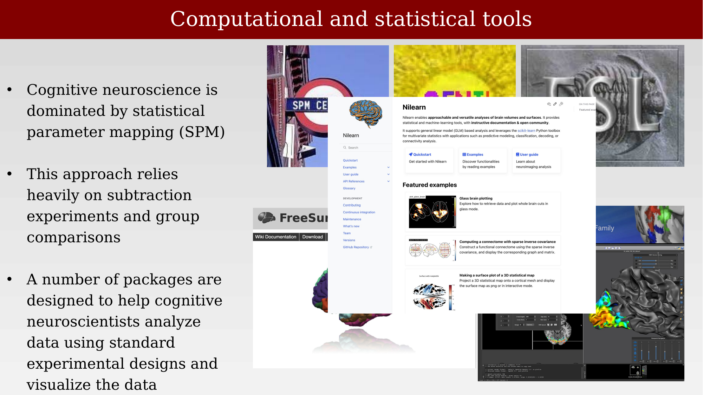
34.2 Modeling the measurements: the general linear model
How do we model the measurements? The approach that dominates fMRI analysis makes four assumptions and choices in sequence: assume the BOLD signal is approximately linear and time-invariant; represent the experiment with a design matrix; predict the response to each event by convolving it with a hemodynamic response function (HRF); and fit the resulting model to the data using the general linear model (GLM).
Linear, time-invariant (or shift-invariant) systems are defined by two empirical properties: scaling (also called homogeneity) and superposition. Scaling means that doubling the input doubles the output. Superposition means the response to two events is the sum of the responses to each event individually. Shift-invariance means that the same stimulus, delivered at a different time, produces the identical response, just shifted in time.
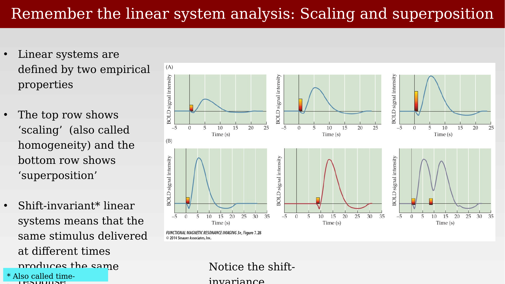
34.3 The design matrix
The design matrix describes the stimulus events over time. Each column of the matrix marks the onset times of one experimental condition; each row is a moment in time. The predicted BOLD response at a voxel is calculated by combining a model of the response — the convolved design matrix — with a set of weights, one per condition, usually called the beta weights (\(\beta_1, \beta_2, \beta_3, \dots\)). The design matrix is the same for the whole brain, but the beta weights differ at every voxel: each voxel has its own beta weights, describing how strongly that voxel’s response is driven by each condition.
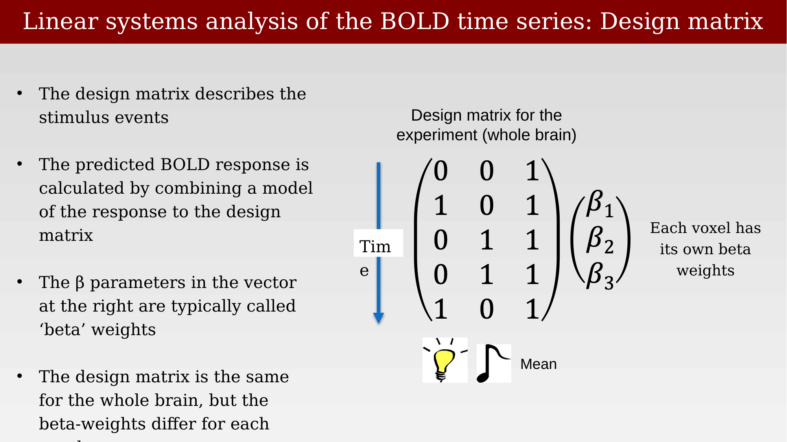
34.4 The hemodynamic response function
We account for the response to an impulse stimulus, as measured by the BOLD signal, using the hemodynamic response function (HRF): the block-diagram picture of the imaging pipeline — stimulus, neural response, hemodynamics, MRI scanner, plus noise — collapses the neural-response-to-hemodynamics stages into a single linear transform whose impulse response is the HRF.
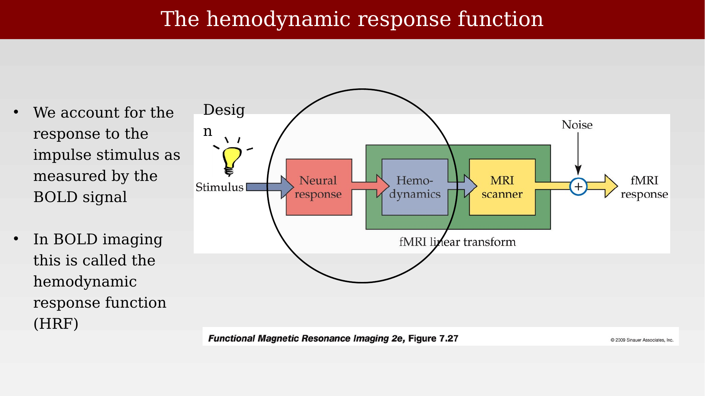
Estimated HRFs vary across studies, brain regions, and analysis packages — some rise and fall within about 10 seconds, others take closer to 20 — but they share a common overall shape: a rise beginning a couple of seconds after the stimulus, peaking around 5-6 seconds, and returning to baseline (sometimes with an undershoot) after 15-20 seconds.
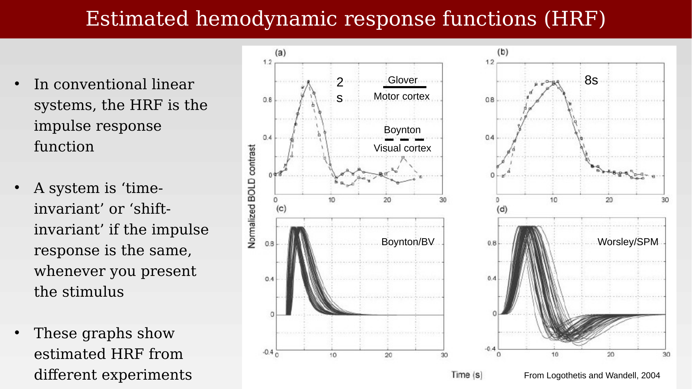
34.5 Matrix formulation: convolving the design matrix with the HRF
Because each stimulus moment initiates an HRF-shaped response, the design matrix used for model fitting is not simply a column of zeros and ones — each event column is first convolved with the HRF, so the predicted time series already has the characteristic rise-and-fall shape at every event. At each voxel, we solve for the beta weights that best predict the measured fMRI time series from this HRF-convolved design matrix.
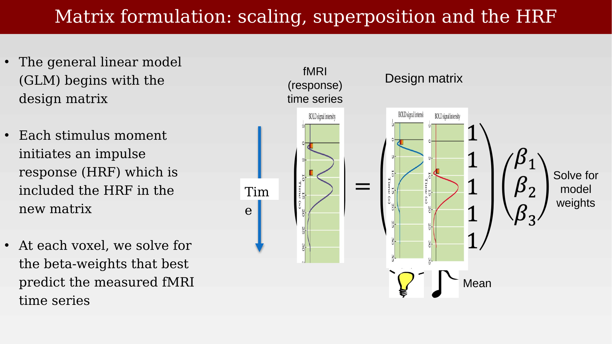
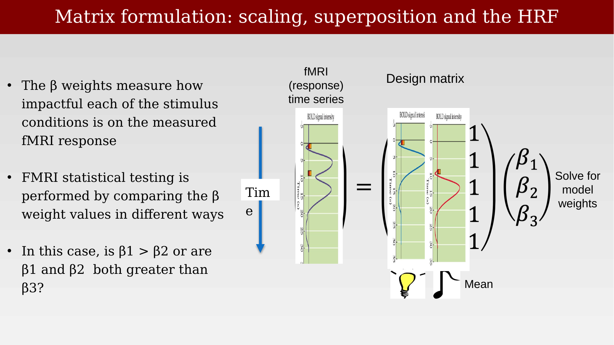
34.6 Nuisance regressors
Over time, neuroimagers have increased the complexity of these design matrices. It is now common to add nuisance regressors to account for factors — head motion, breathing, and other known confounds — that may affect the fMRI signal but are not of scientific interest. This can be useful, but it can also make published design matrices harder to communicate (or understand) and makes the statistics of neuroimaging harder to follow.
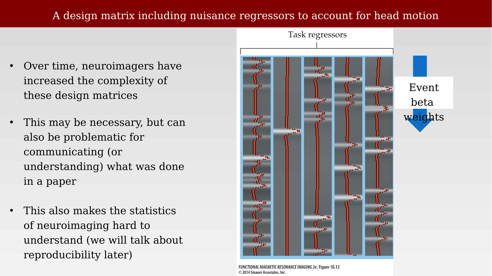
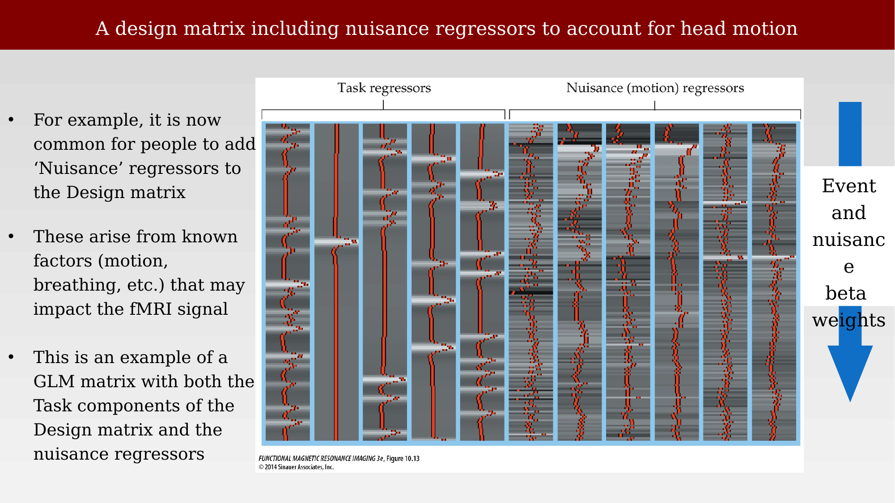
34.7 Is the GLM a good idea?
Linearity of the voxel response can, in principle, be tested directly. But it is worth being precise about what the GLM actually assumes: it assumes linearity of the measurement process, not linearity of the underlying neural processing. And in fact scaling — one of the two defining properties of a linear system — is known to fail in the BOLD response: the “linearity” the GLM relies on turns out to hold with respect to stimulus duration, not stimulus contrast. The rest of this chapter looks directly at the evidence for and against superposition and additivity, the property the GLM depends on most heavily.
34.8 Testing linearity: superposition and the subtraction method
The general linear model rests on superposition: the idea that the response to several events is the sum of the responses to each event on its own. This is the key principle of the linear model, and it can be tested directly. The classic test combines two stimuli presented at different times, measures the response to each individually, and then predicts the joint response by adding the individual responses together. If the two stimuli are well separated in time, the prediction is trivial — the joint response is simply a shifted copy of the two individual responses. The interesting test is what happens as the stimuli move closer together.
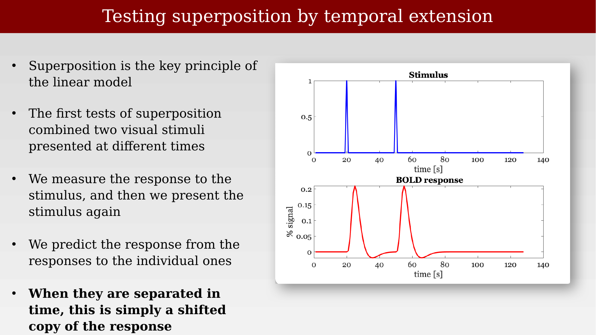
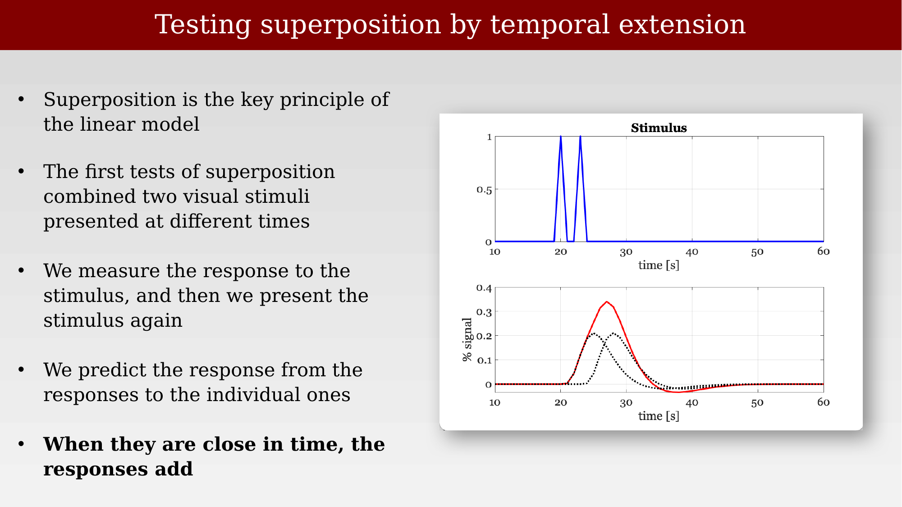
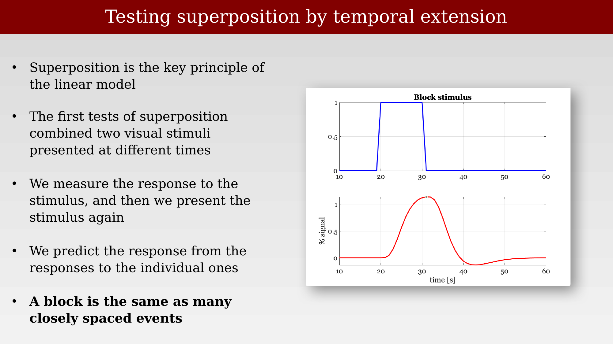
34.9 Evidence for and against additivity
Boynton, Engel, Glover, and Heeger tested the superposition part of the general linear model directly in human V1, comparing responses to pulses of different durations and contrasts against a fitted model response (Boynton et al., 1996). Model fits differed somewhat between subjects — the estimated hemodynamic response function is not identical across people — but the qualitative pattern of scaling with contrast and roughly additive summation across pulse durations held for both subjects shown here.
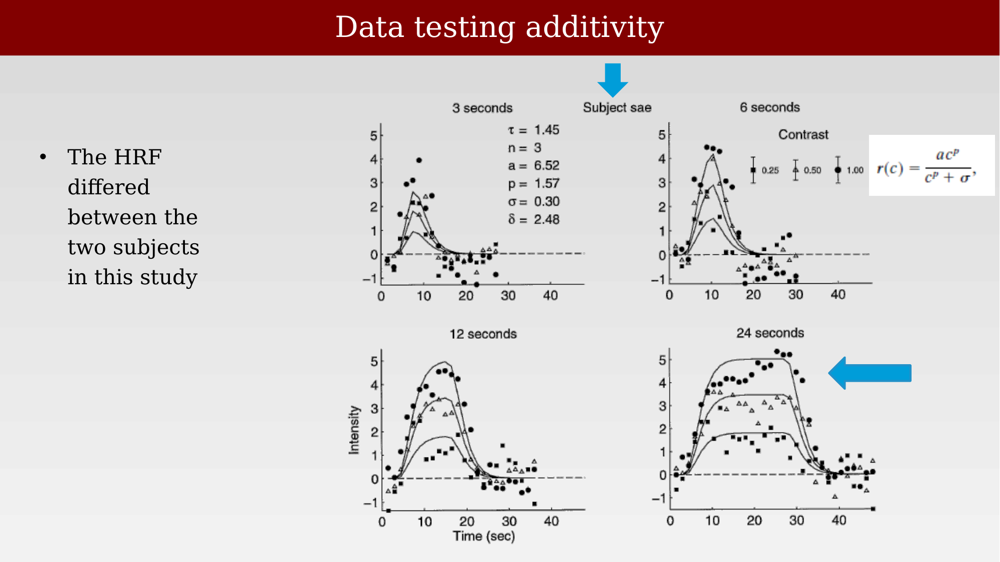
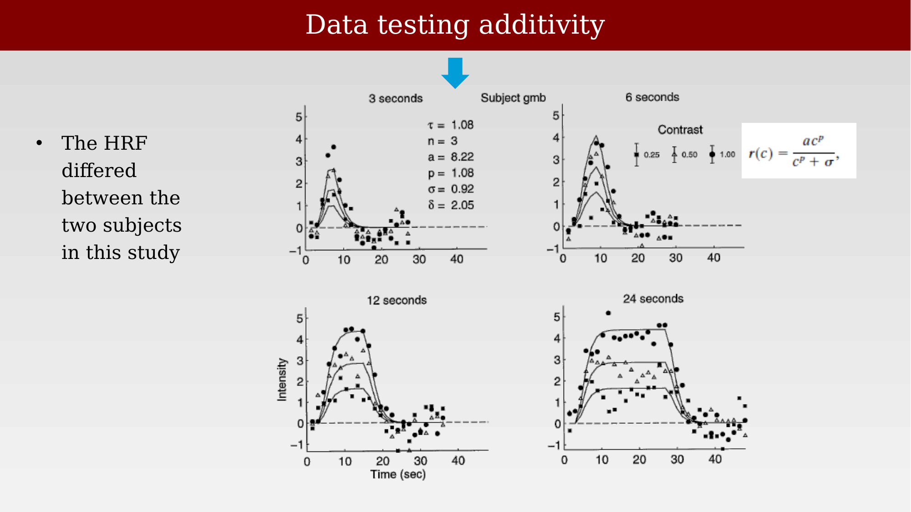
Redrawn in a slightly different format, the same logic appears as a matrix of predicted-versus-measured comparisons: the response predicted by summing shorter-pulse responses together is compared against the response actually measured for a longer pulse. The fit is good over a range of durations and a particular stimulus case, but the linear model is known to fail when it is pushed to different stimulus conditions or different parts of the brain.
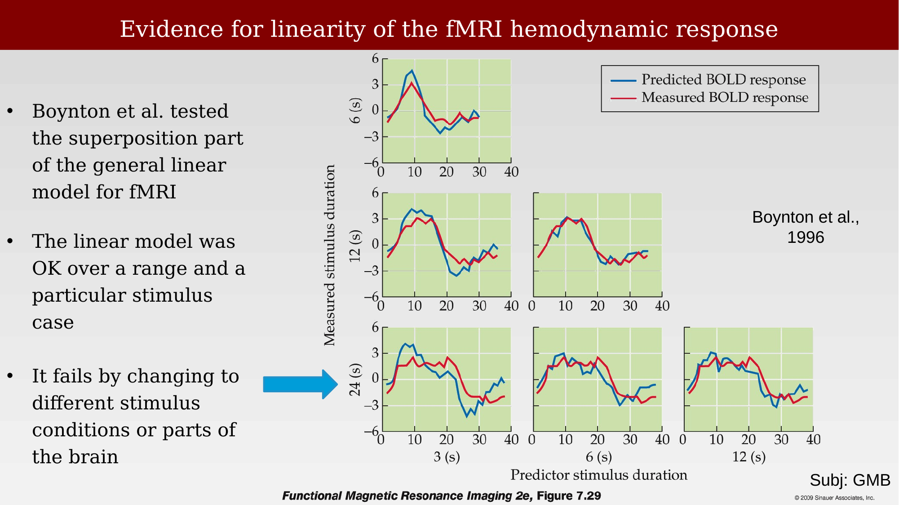
34.10 Scientific aim and the subtraction methodology
The general linear model provides a method for comparing the amplitude of the response evoked by two types of stimuli. It is important to be clear about what it is not: the GLM is not a model of the neural response, and it is not a model of the brain network — it says nothing about interactions between different anatomical locations. What it does provide is a way to ask whether the beta weight associated with stimulus A differs from the beta weight associated with a control condition or stimulus B. That comparison can be framed as a classification decision about the fMRI responses (is A greater than B?) or as a measurement of how different the two conditions are (A minus B). Typically, an fMRI analysis asks this question independently at many locations across the whole brain.
Comparing two beta weights — or comparing one beta weight against zero — is itself a decision made under uncertainty: the beta weights are noisy estimates, not the true underlying values. Deciding whether a difference is real, and how confident to be in that decision, is the subject of the next three chapters.